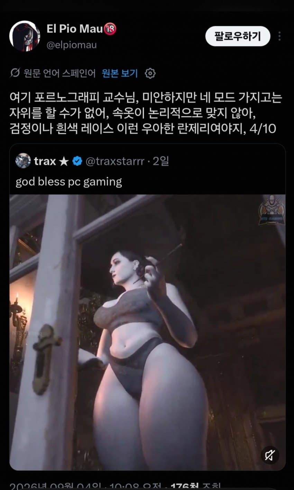
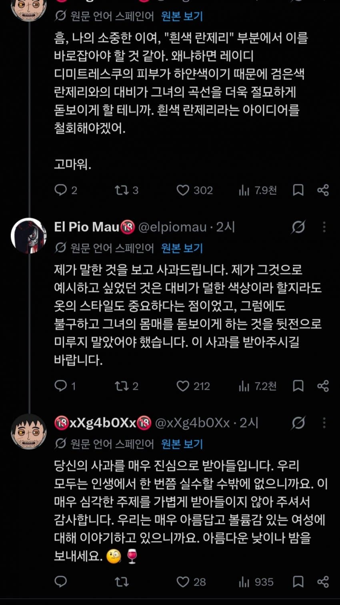
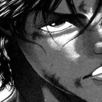
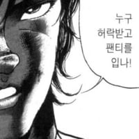

신사적임


신사적임
검정색이어야한다는건 동의하나 우아한 란제리가 아닌것에는 동의할 수 없다
맞음. 속옷 스타일은 중요해.
쿠노이치는 훈도시를 입어야 함.
훈도시가 없으면 쿠노이치라고 인정 할 수 없다.
대마인들 폭풍 오열중
하지만 사슬 스타킹과 티팬티의 조합 그리고 마스크를 쓴 빵닌자를 쿠노이치라고 부르지 않는다면 무엇을 쿠노이치라 부르겠소?
인정 할 수 없소.
티팬티를 원한다면 그만큼 훈도시를 가늘게 만들면 될일이다
天下同归而殊途，一致而百虑
천하는 돌아가는 곳이 같으나 길은 다르고, 이치는 하나이나 생각은 백 가지이다. 라 하였소
돌아가는 곳이 같거늘 가는 길이 훈도시건 티팬티건 무엇이 다르겠소
갈 곳은 하나 그곳이거늘
일본산 가느다란 훈도시라면 티팬티가 아니라 "丁자형 속곳"이라고 불러야 하지 않겠소?


솔직히 여사님으로
99발 뺌 속옷은 중요치 않아
당연히 가터벨트에 스타킹까지 차고 있어야지 색은 빨강이 좋지 않을까 컨셉적으로..
그래도 살집이 눌리게 만든 점은 칭찬할 수밖에 없군
빨강은 안됨. 대비적으로 적갈색 정도가 좋다고 봄
장식이 많은건 부족한 볼륨감을 채울 때 쓰이는거라, 우아한 속옷을 입혔으면 뚱뚱해보였을거 같음
내 생각엔 회색 케빈 클라인을 입었어야할것 같음. 대부분의 경우 옳다
🧐🍷
옷을 입혀서 문제가 생겼으니 벗기면 되겠네

매우 고급한 지적인 대화
회색 캘빈 클라인이면 떡을 치겠군
난 스타일이 중요한 쪽임